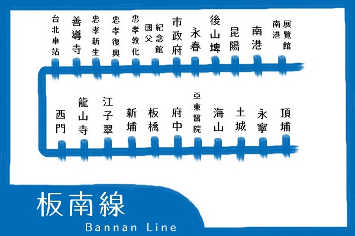

板南線
- 台北a poet 地中海料理餐廳
- CRYSTAL SPOON 晶湯匙泰式主題餐廳
- 紅錦越式料理
【各式異國料理餐廳推薦】
板南線
南京復興站
Mama thai 11
Thai Cuisine
泰式料理餐廳

- 地址：台北市大安區敦化南路一段295巷9號
- 訂位電話：02-2709-0068
- 營業時間：11:30~14:30；14:30~17:00；17:30~22:30
- 交通：由捷運信義安和站步行約5~7分鐘可抵達